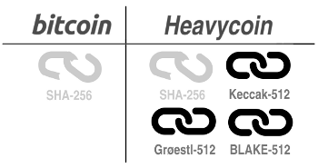
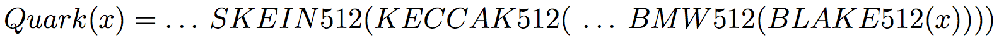
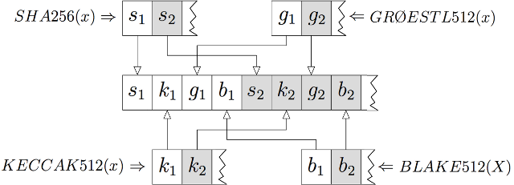
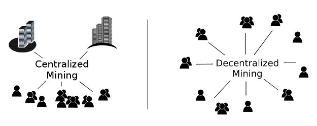
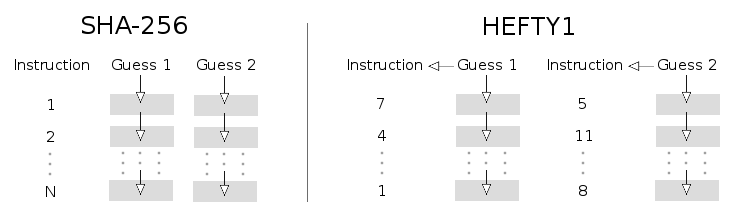
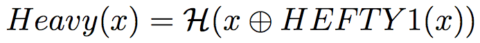
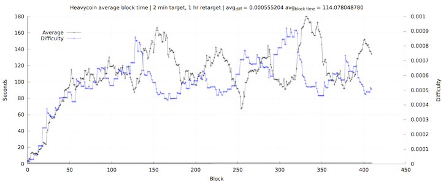

<div class="container">
<div class="well well-main">
    <!-- Service Tabs -->
    <div class="row">
        <div class="col-lg-12">

            <h2 class="page-header">Innovations and features</h2>
            <ul id="myTab" class="nav nav-tabs">
                <li class="active"><a href="#ultra-secure" data-toggle="tab">Ultra-secure</a>
                </li>
                <li><a href="#cpu-only" data-toggle="tab">CPU-only</a>
                </li>
                <li><a href="#decentralised-voting" data-toggle="tab">Decentralized voting</a>
                </li>
                <li><a href="#fast-transactions" data-toggle="tab">Fast transactions</a>
                </li>
                <li><a href="#temporal-retargeting" data-toggle="tab">Temporal retargeting</a>
                </li>
            </ul>

            <div id="myTabContent" class="tab-content">
                <div class="tab-pane fade in active" id="ultra-secure">
                    <i class="fa fa-thumbs-o-up  pull-left fa-4x"></i>
                    <p>

                    Heavycoin introduces a novel ultra-secure hash
                    algorithm that employs multiple redundant
                    cryptographic hash functions to secure its block
                    chain.  If one of these hash functions fail, then
                    Heavycoin is still protected by the others.  This
                    is a significant step forward over Bitcoin,
                    Litecoin and most other crypto-currencies, which
                    rely on a single cryptographic hash function.

                    </p>

                    <p><center></center></p>

                    <p>
                    Moreover, Bitcoin and most other altcoins rely
                    only on SHA-256, which was developed by the NSA.
                    The recent Snowden revelations bring into question
                    the security promise of SHA-256 and, thus, the
                    true government independence of Bitcoin.
                    </p>

                    <p>
                    Heavycoin uses the following cryptographic hash functions
                    <ul>
                      <li><a href="https://en.wikipedia.org/wiki/SHA-256" target="_blank">SHA-256</a></li>
                      <li><a href="https://en.wikipedia.org/wiki/SHA-3" target="_blank">Keccak-512</a> (a.k.a., SHA-3)</li>
                      <li><a href="https://en.wikipedia.org/wiki/Groestl" target="_blank">Grøestl-512</a></li>
                      <li><a href="https://en.wikipedia.org/wiki/BLAKE_(hash_function)" target="_blank">BLAKE-512</a></li>
                    </ul>
                    <p/>
                    <p>
                    These cryptographic hash functions were selected
                    because they have little in common and so a common
                    weakness is thought to be extremely unlikely.
                    </p>

                    <p></br>
                    <b>Q: Doesn't Quarkcoin already implement multiple cryptographic hash functions?</b>
                    </p>

                    <p>
                    <b>A:</b>
		    Yes, but incorrectly and without increasing
                    security.  Quarkcoin (and its many clones)
                    actually implement multiple hash functions as a
                    simple chain of function compositions
                    </p>

                    <center>
                    
                    </center>
                    <p>
		    where ... contains additional hash function
		    compositions using JH-512, Keccak-512, BMW-512,
		    BLAKE-512, SKEIN-512 or Grøestl-512, which are
		    randomly selected based on the 4th bit of previous
		    hash outputs.
		    </p>

		    <p>

                    The problem is that, due to Quarkcoin's simple use
                    of function compositions, if BLAKE512(x) has
                    collisions, then so does BMW512(BLAKE512(x)) and
                    SKEIN512(KECCAK512(... so on, until we reach
                    Quark(x), which also has collisions.  Similarly,
                    SKEIN-512 or Grøestl-512 turn out to be
                    cryptographically weak, then so is Quark(x).
                    Simply put, the way that Quarkcoin combines
                    multiple hash functions does not provide extra
                    security.  If BLAKE-512 is cracked, then so is
                    Quark(x).
                    </p>

                    <p></br>
                    <b>Q: How does Heavycoin implement multiple cryptographic hash functions?</b>
                    </p>

                    <p>
                    <b>A:</b> Heavycoin takes the strongest 64 bits
                    from 4 well-known cryptographic hash functions
                    (SHA-256, Keccak-512, Grøestl-512 and BLAKE-512)
                    and interleaves these bits into a combined 256-bit
                    hash.  This is safe because, by definition, a
                    cryptographic hash function's outputs are
                    considered random bits.
                    </p>

		    <center>
		    
		    </center>

                    <p>
                    The diagram above gives a quick snapshot example
                    of how Heavycoin combines the outputs from its 4
                    cryptographic hash functions.  This gives
                    Heavycoin a significant security advantage because
                    it does not rely on the long-term security of any
                    single cryptographic hash function.  If BLAKE-512
                    is cracked, then Heavy(x) is only weakened, but
                    Heavycoin would remain fully functional and secure.
                    </p>
                </div>

              <div class="tab-pane fade" id="cpu-only">
                  <i class="fa fa-gears pull-left fa-4x"></i>

		  <p>
		  Mining centralization is a problem for Bitcoin,
		  Litecoin and most other crypto-currencies.
		  Increasingly, more and more transactions are mined
		  by a handful of big players with expensive,
		  specialized hardware.  When most transaction
		  processing is handled by a wealthy, small group,
		  then this threatens the crypto-currency's
		  independence and the numerous benefits that come
		  from decentralization.
		  </p>

		  <center>
		    
		  </center>

                  <p>
                  To support the largest, most vibrant mining
                  community, Heavycoin introduces a novel CPU-only
                  cryptographic hash function called HEFTY1.  This
                  enables anyone with a normal computer to mine
                  Heavycoins and become a stakeholder, so that
                  transaction processing is spread among a more
                  wide-range of individuals and organizations.  HEFTY1
                  works by breaking out of the SIMD
                  (single-instruction, multiple-data) assumption that
                  GPU and ASIC miners rely on, with the long-term
                  promise of always being CPU-only.
                  </p>

		  <h3>Features</h3>
		  <ul>
		    <li>CPU-only forever</li>
		    <li>Tiny memory footprint</li>
		  </ul>

		  <h3>Details</h3>

		  <p>
		  In a nutshell, GPU and ASIC miners are able to
		  parallelize multiple block hash guesses into a single
		  instruction cycle by loading up the functional units
		  with multiple guesses at the same time.  They then
		  exploit the SIMD properties of SHA-256 by executing
		  the same instructions on each register set
		  simultaneously, which comprise the rounds of
		  SHA-256.  This is what enables the tremendous
		  hashing power of GPUs and ASICS.
		  </p>

		  <p>
		  There are many GPU and ASIC resistant
		  crypto-currencies, but they have all been broken and
		  eventually mined by GPUs.  Some tried to make mining
		  memory-hard (Scrypt, Litecoin, Yacoin, Memorycoin).
		  Others tried to increase the implementation
		  complexity of the cryptographic hash functions
		  (Quark, et al).  However, at the end of the day, all
		  of these efforts were overcome because GPU and ASIC
		  miners are always able to increase their fast access
		  memory capacity and also the complexity of their
		  implementations.  Moreover, making mining
		  memory-hard has serious drawbacks, which prevents
		  your average desktop user from mining.
		  </p>

		  <p>
                  Heavycoin is different because it is designed from
		  its core to be permanently CPU-only.  Heavycoin
		  introduces the HEFTY1 cryptographic hash function in
		  order to thwart GPU and ASIC miners by breaking out
		  of the SIMD paradigm.  The machine instructions that
		  comprise HEFTY1 vary depending on input data.  That
		  is, the particular instructions that are executed
		  will not be the same for each hash guess.  Thus, it
		  impossible for a GPU or ASIC to have an advantage
		  over a CPU.
		  </p>

		  <center>
		    
		  </center>

		  <p>
		  HEFTY1 must thwart GPU and ASIC miners while also
		  providing secure cryptographic hashing.  To this
		  end, HEFTY1 was carefully constructed by making a
		  minimalistic extension to
		  SHA-256's <a href="https://en.wikipedia.org/wiki/Merkle–Damgård_construction" target="_blank">Merkle–Damgård
		  construction</a> and experimentally validating it
		  against <a href="https://en.wikipedia.org/wiki/FIPS_140-2" target="_blank">FIPS
		  140-2</a> and
		  the <a href="http://www.phy.duke.edu/~rgb/General/dieharder.php" target="_blank">Dieharder</a>
		  statistical test suite.  For more details, please
		  visit the
		  <a href="">HEFTY1 project page</a>.
		  </p>

		  <h3> Security</h3>

                  <p>

                  HEFTY1 is new and its security is not proven.
                  Therefore, we deploy it in a safe way that is
                  provably at least as secure as the 4 main
                  cryptographic hash functions that protect Heavycoin.
                  We use HEFTY1 as a secondary hash of the input,
                  while the original input is still hashed by SHA-256,
                  Keccak-512, Grøestl-512 and BLAKE-512.
                  Specifically, for each secure cryptographic hash
                  function 
                  in (SHA-256, Keccak-512, Grøestl-512 and BLAKE-512),
                  we use the following collision avoiding
                  construction.

                  </p>

                  <p><center>
                  
                  </center></p>

                  <p>

                  where <font size="4">&#8853;</font> is the
                  concatenation operation.  This means that even if
                  HEFTY1 has collisions, the input to
                   still contains
                  the original input and, therefore, will not collide.

		  </p>

		  <p>

                  In this way HEFTY1 is only used for thwarting GPU
                  miners, while the block chain is secured through the
                  use of the 4 well-known cryptographic hash
                  functions.  In a highly unlikely worst case scenario
                  where HEFTY1 is broken, then GPU-miners could obtain
                  a speed advantage only.  The block chain would still
                  be secured through SHA-256, Keccak-512, Grøestl-512
                  and BLAKE-512.

                  </p>
              </div>

              <div class="tab-pane fade" id="decentralised-voting">
                  <i class="fa fa-users pull-left fa-4x"></i>
                  <p>
                  Until now, all crypto-currencies had fixed mining
                  schedules, dictated by the creator of the currency.
                  Heavycoin takes a different approach by relying on
                  its user-base to democratically decide the mining
                  schedule through decentralized voting.  Both the
                  mining schedule and money supply (which still has a
                  maximum upper-bound) are decided through a provably
                  cheat-proof decentralized voting process.
                  </p>

		  <h3>Join the experiment!</h3>

		  <p>
		  By mining Heavycoins you can take part in
		  decentralized block reward voting and democratically
		  decide on the following.
		  </p>
		  <ul>
		    <li>Mint rate of bulk money supply: 128 days to 25+ years</li>
		    <li>Maximum money supply: 63M to 128M</li>
		    <li>Mining reward lifetime: 5 years to 38+ years</li>
		  </ul>

		  <h3>How it works</h3>

		  <p>
		    Intially Heavycoin starts with a zero block
		    reward.  The very first miners will have the first
		    opportunity to solve blocks and vote on what the
		    first democratically selected block reward should
		    be.  The first 100 blocks (3.3 hours) will decide
		    the starting block reward.  From then on, block
		    reward voting will continue, but the votes are
		    counted and averaged every 3600 blocks (5 days).
		  </p>

		  <p>
		  Heavycoin is configured to mine and vote by default,
		  with a default vote of 512 HVC.  If you want to
		  change your block reward vote then
		  see <a href="voting.html">How to vote</a>.
		  Otherwise, to disable voting then see
		  <a href="mining.html">How to mine</a>.
		  When mining is enabled, every time you mine a block
		  your wallet will automatically cast a block reward
		  vote.  The Heavycoin network automatically averages
		  these votes every 5 days (3600 blocks) and sets the
		  new block reward accordingly.  The block reward is
		  the average of all 3600 votes over the previous
		  voting period rounded to the nearest integer.
		  </p>

		  <h3>Voting phases</h3>
		  <p>
		  Voting is divided into three phases (Mint, Limit and
		  Sustain) in order to allow votes to affect both the
		  mint rate and the money supply, but also to allow
		  the network to be sustained over the long-term.  The
		  first phase (Mint) allow a maximum vote of 1024 HVC.
		  The second phase (Limit) allows a maximum vote of
		  1024 HVC for the first 59,876 blocks, but 8 HVC for
		  the last ~3,600 blocks so it can transition into to
		  the last phase (Sustain).  The Sustain phase allows
		  a maximum vote of 8 HVC.
		  </p>

                  </br>   

<div class="panel panel-default">
  <!-- Default panel contents -->
    <table class="table table-bordered vphases col-center">
        <thead>
          <tr>
            <th width="25%"><h3>Phase</h3></th>
            <th width="25%"><h3>Voting</h3></th>
            <th width="25%"><h3>Duration</h3></th>
            <th width="25%"><h3>Supply</h3></th>
          </tr>
        </thead>
        <tbody>
          <tr class="center">
            <td><h3>Mint</h3> 45,000,000 HVC</td>
            <td>Votes affect the duration of the initial minting. The larger the block reward, the quicker the 45M coins will be awarded.</td>
            <td>72 days to 25+ years</br> (depending on votes)</td>
            <td>45,000,000 HVC</br> (fixed)</td>
          </tr>
          <tr>
            <td><h3>Limit</h3> 63,476 blocks</td>
            <td>Votes affect the final money supply. The smaller the block reward, the smaller the supply. Maximum possible supply is 128M coins.</td>
            <td>56 days</br> (fixed)</td>
            <td>0 − 64,999,424 HVC</br> (depending on votes)</td>
          </tr>
          <tr>
            <td><h3>Sustain</h3> 10,000,576 coins</td>
            <td>Votes affect the duration of the long−term sustainment of the network. The largest possible vote is reduced to 8.</td>
            <td>4.7 years to 38+ years</br> (depending on votes)</td>
            <td>10,000,576 HVC</br> (fixed)</td>
          </tr>

          <tr>
            <td colspan="4"><strong>Total supply</strong></br>63,000,576 to 128,000,000 HVC</br>(depending on votes)</td>
          </tr>

        </tbody>
    </table>
</div>
<p> Minimum voting age: none</p>
              </div>

              <div class="tab-pane fade" id="fast-transactions">
                  <i class="fa fa-rocket pull-left fa-4x"></i>
                  <p>
		  Heavycoin has an average transaction time of 2
		  minutes, which is faster than Bitcoin and Litecoin.
		  Users have the flexibility of waiting longer for
		  additional security, as needed, on a per transaction
		  basis.  Compared to a 1 minute block time,
		  Heavycoin's 2 minute block time reduces block
		  chain bloat and also provides stability by reducing
		  forking and block chain reorganizations.
		  </p>

		  <h3>Parameters</h3>
		  <ul>
		    <li>Block time: 2 minutes</li>
		    <li>Retarget up: every 5 blocks</li>
		    <li>Retarget down: every block</li>
		    <li>Average: last hour</li>
		    <li>Multipool protection: temporal retargeting algorithm</li>
		  </ul>

		  <h3>Details</h3>

		  <p>
		  Block propagation speeds are higher than you might
		  expect.  In the
		  publication <a href="http://www.tik.ee.ethz.ch/file/49318d3f56c1d525aabf7fda78b23fc0/P2P2013_041.pdf">Information
		  Propagation in the Bitcoin Network</a>, the authors
		  show that the mean time for a node to see a block is
		  12.6 seconds and after 40 seconds 95% of the nodes
		  have seen that block.  However, this is not carte
		  blanche on selecting 40 second block times.  We
		  still must consider the negative impacts on short
		  block times when miners conflict and create tiny
		  forks.  Additionally, a quicker block time produces
		  more blocks per day, which means a 1 minute block
		  chain grows up to twice as fast as a 2 minute block
		  chain.
		  </p>

              </div>

              <div class="tab-pane fade" id="temporal-retargeting">
                  <i class="fa fa-gears pull-left fa-4x"></i>
                  
		  <p>
		  Fledgling crypto-currencies must survive in a harsh
		  environment and face challenges that Bitcoin does
		  not.  The most serious challenge is to withstand
		  tremendous difficulty fluctuations that can occur
		  when automatic profit switching mining pools
		  (a.k.a. multipools) target a new crypto-currency.
		  Most crypto-currencies mitigate this issue with the
		  Kimoto Gravity Well, but recovery can still take
		  weeks.  Heavycoin has its own solution called
		  Temporal Retargeting, which is much faster.
		  </p>
		  <br/>

		  <center>
		    
		  </center>

		  <h3>Problem</h3>
		  <p>
		  When a fledgling crypto-currency starts to become
		  valuable it gradually moves on to the radar of
		  larger mining organizations called multipools.
		  Multipools switch between multiple crypto-currencies
		  automaticaly based on which one is most profitable
		  to mine.  When a multipool hits a crypto-currency it
		  can add an astronomical amount of hashing power,
		  which is good.  However, when it switches away, it
		  can leave so quickly that the difficulty does not
		  have time to adjust back down.  This is very bad!
		  </p>

		  <p>
		  The result is a frozen network, where transactions
		  cannot be processed because no blocks are being
		  solved.  Depending on how high the difficulty spike,
		  the network could remain in a frozen state (unable
		  to solve a block and process transactions) for
		  hours, days, weeks or even months.  This problem has
		  affected many alternative crypto-currencies, causing
		  huge panics, price drops and hard forks as the
		  developers had to release new software to unfreeze
		  the network.
		  </p>

		  <p>
		  The core of the problem is that most retargeting
		  algorithms only retarget periodically based on the
		  block number.  Bitcoin was designed with the
		  assumption that the hashing power will not suddenly
		  vanish.  It assumes there will always be another
		  block from which to calculate the new difficulty.
		  However, this is not a valid assumption anymore.
		  </p>

		  <h3>Solution</h3>

		  <p>
		  Until now, the best known solution to this problem
		  was
		  the <a href="https://bitcointalk.org/index.php?topic=240861.msg3040291#msg3040291" target="_blank">Kimoto
		  Gravity Well retargeting algorithm</a>, which allows
		  the difficulty to return to normal more rapidly.
		  Unfortunately, the Kimoto Gravity Well still
		  requires at least one block to be solved, which can
		  take weeks.  For example, consider the
		  <a href="https://bitcointalk.org/index.php?topic=391192.msg4987231#msg4987231" target="_blank">recent
		  FedoraCoin hard fork</a> where users were crying
		  about having to wait weeks for Kimoto to kick in.
		  </p>

		  <p>
		  Heavycoin takes a different approach to the mulipool
		  problem and introduces a concept called Temporal
		  Retargeting.  In Heavycoin, the network will begin
		  to self-heal by lowering the difficulty if no block
		  is found after a significant amount of time.
		  However, to guarantee security, the self-healing
		  time threshold is selected so that an adversary
		  cannot manipulate the network in order to lower the
		  difficulty artificially.
		  </p>

		  <p>
		  Heavycoin's Temporal Retargeting algorithm
		  guarantees that transactions are never frozen for
		  more than 3 hours.  The network will automatically
		  recover from multipool difficulty spike without
		  panic or emergency developer intervention.
		  Considering Bitcoin's confirmation time, we think 3
		  hours is an acceptable guarantee and should be a
		  significant improvement over the Kimoto Gravity
		  Well.
		  </p>

	      </div>

          </div>
      </div>
  </div>
  <!-- /.row -->

</div>
</div>
